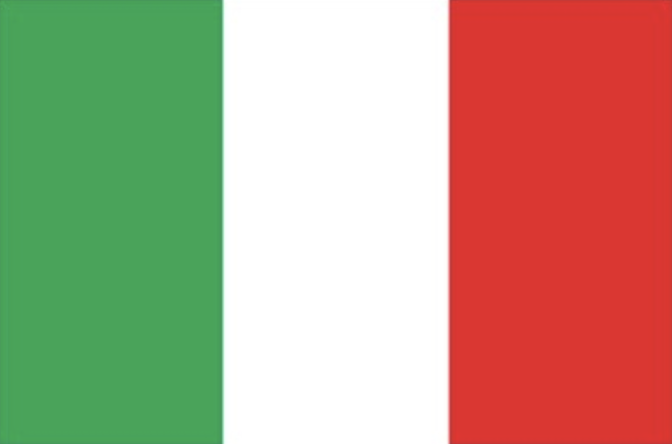

Benvenuti in Italia.
Italy became a nation-state in 1861 when the regional states of the peninsula, along with Sardinia and Sicily, were united under King Victor EMMANUEL II. An era of parliamentary government came to a close in the early 1920s when Benito MUSSOLINI established a Fascist dictatorship. His alliance with Nazi Germany led to Italy's defeat in World War II. A democratic republic replaced the monarchy in 1946 and economic revival followed. Italy is a charter member of NATO and the European Economic Community (EEC) and its subsequent successors the EC and the EU. It has been at the forefront of European economic and political unification, joining the Economic and Monetary Union in 1999. Persistent problems include sluggish economic growth, high youth and female unemployment, organized crime, corruption, and economic disparities between southern Italy and the more prosperous north.
three equal vertical bands of green (hoist side), white, and red; design inspired by the French flag brought to Italy by Napoleon in 1797; colors are those of Milan (red and white) combined with the green uniform color of the Milanese civic guard
note: similar to the flag of Mexico, which is longer, uses darker shades of green and red, and has its coat of arms centered on the white band; Ireland, which is longer and is green (hoist side), white, and orange; also similar to the flag of the Cote d’Ivoire, which has the colors reversed – orange (hoist side), white, and green
Southern Europe, a peninsula extending into the central Mediterranean Sea, northeast of Tunisia
42 50 N, 12 50 E
Europe
total: 301,340 sq km
land: 294,140 sq km
water: 7,200 sq km
note: includes Sardinia and Sicily
predominantly Mediterranean; alpine in far north; hot, dry in south
coal, antimony, mercury, zinc, potash, marble, barite, asbestos, pumice, fluorspar, feldspar, pyrite (sulfur), natural gas and crude oil reserves, fish, arable land
62,390,364 (July 2021 est.)
noun: Italian(s)
adjective: Italian
Italian (includes small clusters of German-, French-, and Slovene-Italians in the north and Albanian-Italians and Greek-Italians in the south)
Italian (official), German (parts of Trentino-Alto Adige region are predominantly German speaking), French (small French-speaking minority in Valle d'Aosta region), Slovene (Slovene-speaking minority in the Trieste-Gorizia area)
Christian 83.3% (overwhelmingly Roman Catholic with very small groups of Jehovah's Witnesses and Protestants), Muslim 3.7%, unaffiliated 12.4%, other 0.6% (2010 est.)
conventional long form: Italian Republic
conventional short form: Italy
local long form: Repubblica Italiana
local short form: Italia
former: Kingdom of Italy
etymology: derivation is unclear, but the Latin "Italia" may come from the Oscan "Viteliu" meaning "[Land] of Young Cattle" (the bull was a symbol of southern Italic tribes)
parliamentary republic
name: Rome
geographic coordinates: 41 54 N, 12 29 E
time difference: UTC+1 (6 hours ahead of Washington, DC, during Standard Time)
daylight saving time: +1hr, begins last Sunday in March; ends last Sunday in October
etymology: by tradition, named after Romulus, one of the legendary founders of the city and its first king
civil law system; judicial review of legislation under certain conditions in Constitutional Court
Italy’s economy comprises a developed industrial north, dominated by private companies, and a less-developed, highly subsidized, agricultural south, with a legacy of unemployment and underdevelopment. The Italian economy is driven in large part by the manufacture of high-quality consumer goods produced by small and medium-sized enterprises, many of them family-owned. Italy also has a sizable underground economy, which by some estimates accounts for as much as 17% of GDP. These activities are most common within the agriculture, construction, and service sectors.
Italy is the third-largest economy in the euro zone, but its exceptionally high public debt and structural impediments to growth have rendered it vulnerable to scrutiny by financial markets. Public debt has increased steadily since 2007, reaching 131% of GDP in 2017. Investor concerns about Italy and the broader euro-zone crisis eased in 2013, bringing down Italy's borrowing costs on sovereign government debt from euro-era records. The government still faces pressure from investors and European partners to sustain its efforts to address Italy's longstanding structural economic problems, including labor market inefficiencies, a sluggish judicial system, and a weak banking sector. Italy’s economy returned to modest growth in late 2014 for the first time since 2011. In 2015-16, Italy’s economy grew at about 1% each year, and in 2017 growth accelerated to 1.5% of GDP. In 2017, overall unemployment was 11.4%, but youth unemployment remained high at 37.1%. GDP growth is projected to slow slightly in 2018.
$2,002,763,000,000 (2019 est.)